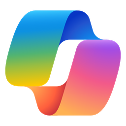

把 Microsoft 365 Copilot 转成 OpenAI / Anthropic 兼容 API 的自托管网关，DSM 7 套件版。
在 DSM 里打开 套件中心 → 设置 → 套件来源 → 新增，名称任填，位置填：
https://kosje.github.io/M365-Copilot2API-DSM/index.json
添加后回到套件中心左侧的社群分类，就能看到 Copilot2API，点安装即可。以后有新版本，套件中心会像官方套件一样提示更新。
首次安装会提示「由第三方开发者提供，未经 Synology 验证」，点确定继续。DSM 7 取消了 DSM 6 时代的「任何发布者」信任级别开关，所有社群套件都会有这个提示，签名也无法消除。
| DSM | 7.0 及以上 |
|---|---|
| 架构 | x86-64。二进制为 linux/amd64，ARM 机型无法运行 |
| 端口 | 4141（固定） |
已实测：DS918+ / DSM 7.2.1-69057 Update 12 / Intel J1900。
http://群晖IP:4141，或点桌面上的 Copilot2API 图标http://群晖IP:4141/v1本项目不是微软官方产品，与 Microsoft、OpenAI、Anthropic 均无从属关系；仅供个人学习与研究，禁止用于商业 API 转售。 许可证 AGPL-3.0 with Non-Commercial API Relay Restriction。